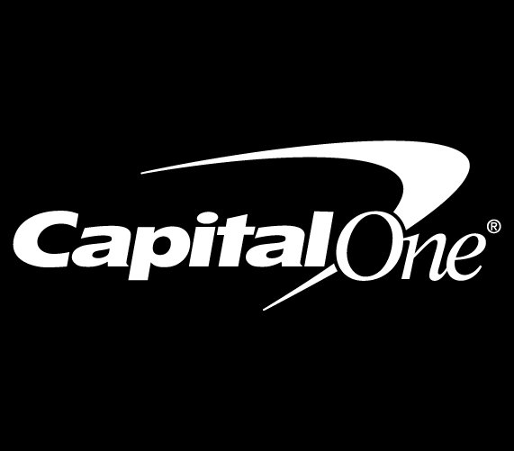

Capital One · Design Strategist Consultant · 2016–2018Revamping America's #8 bank.
Led research-driven design strategy across Capital One's SMB banking, mobile T&E, virtual card, and Capital One Café — and contributed to Project Elements, a radical reimagining of the credit card that launched as a physical installation in San Francisco.
The challenge
Capital One had the infrastructure of America's #8 bank and the ambition of a tech company. My work spanned several initiatives — all connected by a research-first approach and a belief that banking UX could be radically more human.
The core tension was consistent across every project: Capital One needed to serve diverse user needs — from millennials building credit to SMB owners managing complex finances — while modernizing systems that had grown organically over decades.
SMB banking research
For the ICCE (Integrated Commercial Card Experience) initiative, I led an extensive research program: over 20 in-person empathy interviews with small business owners, phone interviews with existing customers for the Virtual Card program, and 6 taped webcam sessions for remote validation.
From this research I built a comprehensive Ecosystem Concept Model — mapping all the tasks a small business owner performs at every cadence (daily, weekly, monthly, quarterly, yearly) against their internal attitudes and external relationships. This radial model became the foundation for SMB product strategy and was used by multiple product teams to align on what to build first.
Key insights surfaced three user archetypes — ICCE Mobile (T&E), ICCE Web Virtual Card Users, and Decision Makers — each with distinct needs around visibility, control, and workflow automation. I translated these into distilled themes, driving principles, and a sample features roadmap that moved insights directly into product planning.
Mobile banking
The Capital One mobile app work was grounded in a clear set of user goals and business goals that I helped define and align across teams. On the user side: save money for the future, manage travel costs and standard expenses, learn more about wealth management, and trim spending without having a "dull life." On the business side: become the cardholder's preferred primary bank, expand personal finance management capabilities, and increase brand awareness among millennials.
I contributed to information architecture concepts, wireframes, and IA stress tests across multiple rounds — working through flows for account management, virtual card controls, the Eno AI assistant, and the ICCE SMB dashboard.
Project Elements
Project Elements by Capital One Labs was the most ambitious design project I contributed to during this engagement. The premise: the credit card is a physical object you carry every day — it should feel like it belongs to you, not your bank.
The project reimagined every aspect of the card — its shape (soft rounded rectangle instead of hard corners), its material (bamboo, leather, textured metal, custom colors), and its visual identity (personalized with your signature, your chosen aesthetic). Cards had names: Bamboo. Coral. Lemon. Each told a story about the person who carried it.
The project launched as a physical installation in San Francisco — a gallery-style experience where people could interact with card prototypes, explore different materials and finishes, and envision a version of financial product design that treated the cardholder as a creative collaborator rather than a number.
Capital One Café
I also contributed UX strategy to the Capital One Café initiative — the bank's flagship physical-meets-digital experience designed to make financial services approachable, human, and community-oriented. The Café was open to anyone, not just Capital One customers.
The digital touchpoints I helped design included a welcoming kiosk experience and ambient digital displays — reinforcing the "everyone's welcome" positioning in every interaction.